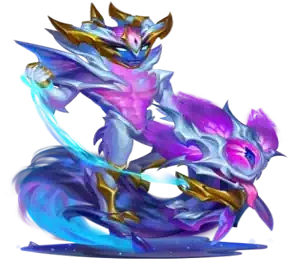
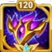
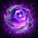

Valdur Titan Guide: Skills, Skins & Teams Hero Wars Alliance
- By: Alexandre Domingos. .
What if moving an enemy mattered as much as hitting them? Valdur, the Voice of Elarite, turns battlefield displacement into an opportunity for his allies. My view is that his real appeal lies in connecting an Elarite team, rather than relying on the small hits of his summon alone.
In this guide, I explain how his living Elarite count changes a fight, why Physical Attack deserves attention, and where I would spend resources first. If you are building Metida, Orm, Alecto, and Pallant, Valdur gives that investment a clear team strategy.

Start with the distinction between direct damage and team value: Child of Elarite pushes and pulls enemies, while Elarite Resonance rewards a larger living Elarite lineup. Losing an ally can therefore change more than your damage output.
The priorities below are my assessment of his listed mechanics. Ratings are build guidance, rather than a measured win-rate ranking.

📋 Valdur Table of Contents
Who Is Valdur in Hero Wars Alliance?
Valdur is the Voice of Elarite, a back-line Summoner who interrupts enemy skills and repeatedly changes enemy positions. He completes the five-member Elarite lineup with Metida, Orm, Alecto, and Pallant.

- Role: Summoner
- Element: Elarite
- Position: Back line
- Main stat: Physical Attack
Valdur’s Listed Stats
- Health: 14,936,503
- Physical Attack: 528,271
- Extra Defense from Light and Dark Titans: 120,600
- Extra Damage to Light and Dark Titans: 213,000
These are the supplied build values, used as the reference for the skill examples below.
Valdur Pros and Cons - Hero Wars Alliance
✅ Pros
- Pushes and pulls enemies with one summon.
- Interrupts enemy skill sequences.
- Physical Attack scales several team bonuses.
- Enables movement damage in a full Elarite team.
- His summon cannot be attacked.
❌ Cons
- Strongly depends on living Elarite allies.
- Movement damage requires actual position changes.
- Each summon hit scales with only 10% Physical Attack.
- The summon stays for just four seconds.
- Crown bonuses target only Light and Dark enemies.
Valdur Skills Guide - Hero Wars Alliance
Learn how Valdur’s summon moves enemies, how Elarite Resonance counts living allies, and why Physical Attack strengthens his damage and team bonuses.
Child of Elarite
In-game description: Summons Child of Elarite at the center of the enemy team. It cannot move. Upon spawning, it knocks back enemies, dealing damage. After 4.0 seconds, Child of Elarite disappears, pulling enemies to itself and dealing damage. Child of Elarite is an Elarite Titan and cannot be attacked.

Skill Explanation: Think of the summon as a temporary anchor in the enemy formation. It appears in the center, pushes enemies away, and deals damage. Four seconds later, it disappears, pulls enemies back toward its position, and deals damage again. It cannot move or be attacked.
Formula per hit: (10% × Physical Attack). At the listed 528,271 Physical Attack, the displayed damage is 52,827 on arrival and 52,827 on disappearance.
PvP importance: The displacement can disrupt enemy skill execution and creates opportunities for the five-Elarite movement effect. The summon itself is an Elarite Titan, which matters for the living Elarite count while it is present.
Elarite Resonance
In-game description: Passive. Empowers allied Elarite Titans. Bonuses stack and depend on the number of Elarite Titans alive. With 2, grants extra damage to Water, Earth, and Fire Titans. With 3, grants extra defense against Water, Earth, and Fire Titans. With 4, Valdur receives 400 Energy when using skills. With 5, when an allied Elarite Titan deals damage to an enemy, the target suffers an effect for 4 seconds, taking damage every 0.5 seconds if they have changed position during that interval. With 6, reduces incoming damage by 50%.

Skill Explanation: Count the living allied Elarite Titans. Each threshold adds a bonus while retaining the earlier bonuses. A defeated ally can lower that count, so keeping the lineup alive is part of Valdur’s offensive plan.
- 2 living Elarite: Extra damage to Water, Earth, and Fire Titans. Formula: (25% × Physical Attack), displayed as 132,068 at the listed stats.
- 3 living Elarite: Extra defense against Water, Earth, and Fire Titans. Formula: (25% × Physical Attack), displayed as 132,068.
- 4 living Elarite: Valdur receives 400 Energy when using skills.
- 5 living Elarite: An allied Elarite’s damage applies a 4-second effect to the enemy. Every 0.5 seconds, it checks whether that target changed position during the interval. Only a qualifying interval deals movement damage.
- 6 living Elarite: Incoming damage is reduced by 50%.
Movement damage per qualifying interval: (0.5% × Physical Attack), displayed as 2,641 at the listed stats. The formula scales with Physical Attack; the supplied data does not identify the damage type.
How do you reach six? Five Elarite team members plus the living Child of Elarite can reach six during the summon’s four-second lifetime. This is conditional on all five team members remaining alive; it is not permanent damage reduction.
PvP importance: Pallant, Metida, and Valdur move enemies, supporting the five-member effect. A stationary target does not take that effect’s damage merely because the debuff is active.
Best Skin for Titan Valdur - Hero Wars Alliance
Choose Valdur’s skin order by balancing Physical Attack scaling against Health, so your Elarite support survives long enough to keep his bonuses active.

Default Skin
Physical Attack: +196,800
Evolution Priority for PvP: Very High — 1st — Improves both summon hits, the damage and defense bonuses, and movement damage.
Evolution Priority for Dungeon: Very High — 1st — Strengthens the same scaling effects when your available lineup can activate them.

Primordial Skin+
Health: +5,255,950
Evolution Priority for PvP: High — 2nd — Adds survival without directly increasing his Physical Attack formulas. Move it ahead if Valdur dies before using his summon.
Evolution Priority for Dungeon: High — 2nd — A survival investment when attrition prevents him from maintaining the team’s Elarite count. Prioritize it first if survival is your bottleneck.
The listed total belongs to Primordial Skin+; do not add it again as a separate base-skin bonus.
Valdur Artifact Evolution Priority - Hero Wars Alliance
Compare Valdur’s artifacts by their team buffs, personal scaling, and matchup limits, then invest in the stats that help your Elarite lineup most often.
My general order is Seal, Weapon, then Crown. The display below keeps Weapon, Crown, and Seal in their original order; each priority label shows the investment order.

Zorval's Call (Weapon Artifact)
Physical Attack: +120,000
Zorval’s Call provides a team Physical Attack bonus with a listed activation chance of 100%. This complements Valdur’s Physical Attack scaling. The supplied values do not specify the buff duration.
Evolution Priority for PvP: High — 2nd — Team attack support is valuable once Valdur survives reliably enough to use his skills.
Evolution Priority for Dungeon: High — 2nd — Helps team offense, while the Seal first supplies permanent personal survival and scaling.

Elarite Crown (Crown Artifact)
Extra Damage To Light And Dark Titans: +213,000
Extra Defense From Light And Dark Titans: +120,600
These extra damage and defense stats apply against Light and Dark Titans. They do not supply the same protection against Water, Earth, Fire, or Elarite opponents.
Evolution Priority for PvP: Medium — 3rd — Raise its priority for frequent Light and Dark matchups; its value is conditional on the enemy element.
Evolution Priority for Dungeon: Medium — 3rd — Extra defense can help survival against Light and Dark enemies, but check the room’s opponents before investing. Dungeon survival alone does not make this Crown universal.

Chthonic Summon Seal (Seal Artifact)
Physical Attack: +97,500
Health: +3,975,000
Evolution Priority for PvP: Very High — 1st — Combines permanent Physical Attack scaling with Health, supporting his skills and survival in every matchup.
Evolution Priority for Dungeon: Very High — 1st — Health helps him stay alive, while Physical Attack improves his summon and eligible Resonance bonuses.
These are Chthonic Summon Seal values, not the values of a standard Summon Seal.
How to Counter Titan Valdur in Hero Wars Alliance
The clearest counterplay targets his dependence on living allies and enemy movement. These are strategies inferred from his skills, rather than a tested list of named Titan counters.
- Break the Elarite count: Defeating one member of a five-Elarite lineup drops its natural count below the movement-damage threshold. The summon can temporarily raise the count again, so watch its timing.
- Limit movement when possible: The five-Elarite effect requires a position change during each checked interval. Being marked alone is insufficient.
- Pressure outside the summon window: With five living Elarite team members, the sixth-count defensive bonus depends on Child of Elarite being present.
- Read elemental bonuses correctly: Light and Dark enemies face the Crown bonuses; Water, Earth, and Fire enemies face Resonance’s two- and three-count bonuses. No elemental matchup is automatically a guaranteed counter.
I would compare fights with and without the first Elarite casualty before judging a counter team. Valdur’s back-line position also means access to him depends on the attacking team’s actual targeting tools.
Best Team for Titan Valdur - Hero Wars Alliance
Team Composition Strategy
Valdur, Metida, Orm, Alecto, and Pallant supply five Elarite team members. Pallant, Metida, and Valdur move enemies, enabling Resonance’s movement damage after an allied Elarite damages a target. Orm and Alecto complete the five-member count.
With all five alive, Child of Elarite can temporarily supply the sixth count and the incoming-damage reduction. My priority is to keep the full lineup alive long enough for those control and defensive windows to matter.
Team Weaknesses and Considerations
Weak against: Strategies that remove an Elarite ally early or prevent consistent displacement can undermine the lineup’s main synergy. This describes a mechanical weakness, not a verified losing matchup.
Strategic considerations: The bonuses depend on living Titans, and the movement effect checks position changes every half-second. Do not assume every mark delivers damage on every interval. Test your actual build before increasing investment.
Alexandre Games YouTube Video
▶️Video: Is Valdur worth it? My honest review of the new Titan.

⭐ Valdur: Alexandre’s Final Verdict
My recommendation is to build Valdur when you are committed to the full Elarite lineup. His summon’s direct damage is only one part of his value: displacement, stacking bonuses, and the temporary sixth Elarite count give the team a coherent battle plan.
I would start with the Default Skin and Chthonic Summon Seal, then develop Zorval’s Call. Bring Primordial Skin+ forward if he is dying early, and raise the Elarite Crown’s priority when Light and Dark matchups justify it. Invest in the problem your team actually faces, while keeping the five-member synergy in view.
Explore new skills with our featured guides!


Leave Your Opinion!
Did you like our Valdur Titan guide? Is there something you didn't understand or would like to suggest changes to? We invite you to join our comment section on the Alexandre Games Blog page. Feel free to express your opinion, clarify your doubts, and share your suggestions.
Click the button below to get started: